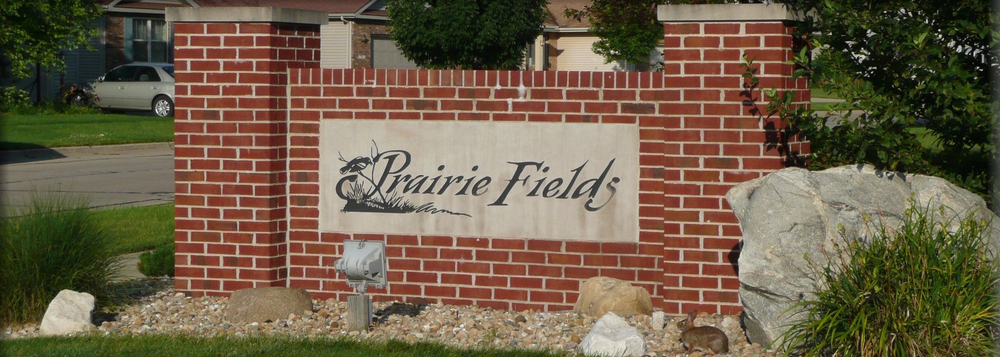

Architectural Control Committe (ACC):
The goal of the Architectural Control Committee is to maintain property values and compliance with applicable covenants when a homeowner makes property changes. The
Covenants for each phase specify that certain property changes require ACC approval. This committee reviews proposed plans and grants approval to proceed. For now, this includes items like
an addition to your home, building a deck, fence, or shed, or other work which might affect neighbors.
Homeowners must submit plans for fences, decks, sheds/ outbuildings, additions, and other structures which require architectural approval to the ACC. You may wish to review your
Covenants for your particular home, before contacting them.
To contact the ACC, please include the following information to
ACC@prairiefieldshoa.com:
- Your name and house address
- A description of the work that you plan to do
- A PDF drawing of the plans
Communications Committee:
The Communications Committee is responsible for facilitating communications with residents of Prairie Fields, including an Annual Newsletter, maintaining this website and a facebook group, sending email updates. You can subscribe to HOA Email List here. The Communications Committee conducts most of its business via email, but does occasionally get together to assemble mailings.
To volunteer on the Communications committee, email the HOA secretary at secretary@prairiefieldshoa.com.
Election Committee:
The Election Committee is responsible for running an annual election of the homeowners within Prairie Fields. The election takes place in November of each year, and the purpose is to elect people to the Board of Directors and to allow a chance for referenda, if any, to be voted upon.
Contact us at elections@prairiefields.com.
Events Committee:
The Events Committee is responsible for organizing events for residents of Prairie Fields. Events include:
- Block Parties
- International Potluck
- Prairie Fields Garage Sale (June)
- Savoy Orchard Days (September)
- Halloween Parade (October)
- Diwali Celebration (October or November)
- Holiday Caroling (December)
The events committee is also in need of a chairperson, and is always in need of more volunteers to assist with planning and running various events and activities. If you would like to volunteer on the events committee or have an idea for an event, email
events@prairiefields.org.
Welcoming Committee:
The Welcoming committee is responsible for welcoming new residents to Prairie Fields. If you would like to assist this committee, email board@prairiefieldshoa.com.